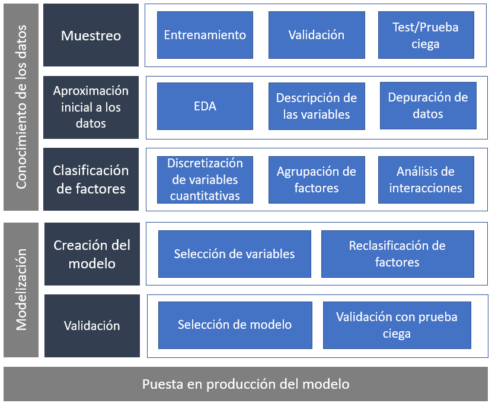
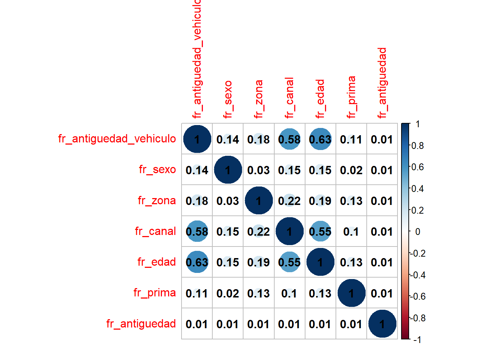
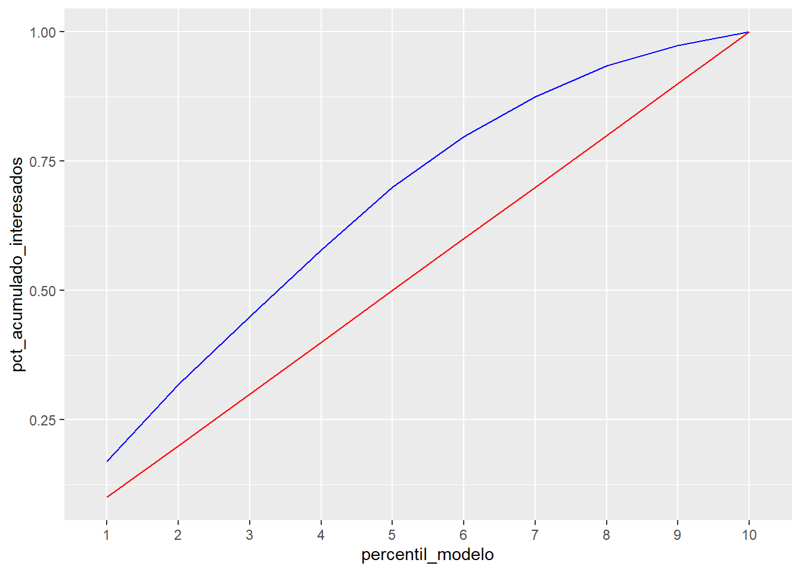

Capítulo 17 Modelización estadística. Seleccionar variables y modelo
El capítulo anterior comenzó con esta imagen.

Se trataba de establecer un marco de trabajo, un guión para el científico de datos con los pasos a seguir en el proceso de modelización estadística. Se trabajó la primera parte de ese marco, el conocimiento de los datos, el inicio del proceso de modelización. Este capítulo será el siguiente paso ilustrando como seleccionar variables a partir de los parámetros del modelo y proponer una selección del modelo final midiendo su capacidad predictiva. Es necesario comenzar justo donde finalizó el paso anterior.
library(tidyverse)
library(DT)
train <- read.csv("./data/train.csv")
# Se mantiene el conjunto de datos inicial
train2 <- train %>%
filter(Previously_Insured == 0 | Vehicle_Damage == "Yes")
# Clasifiación de factores
train2 <- train2 %>% mutate(
fr_antiguedad_vehiculo=case_when(
Vehicle_Age=='< 1 Year' ~ '1. menos 1 año',
Vehicle_Age=='1-2 Year' ~ '2. entre 1-2 años',
TRUE ~ '3. mas 2 años'),
fr_sexo = Gender)
# Agrupación de zonas
fr_zona <- train2 %>%
group_by(Region_Code) %>%
summarise(clientes = round(n()*100/nrow(train2),1),
pct_interesados = round(sum(Response)*100/n(),1),
.groups='drop') %>%
arrange(desc(pct_interesados)) %>% mutate(fr_zona = case_when(
pct_interesados<=12 ~ '3. bajo interés',
pct_interesados<=20 ~ '2. medio interés',
TRUE ~ '1. alto interés'))
fr_canal <- train2 %>%
group_by(Policy_Sales_Channel) %>%
summarise(clientes = round(n()*100/nrow(train2),1),
pct_interesados = round(sum(Response)*100/n(),1), .groups='drop') %>%
arrange(desc(pct_interesados)) %>%
mutate(fr_canal = case_when(
pct_interesados<=12 ~ '3. bajo interés',
pct_interesados<=20 ~ '2. medio interés',
TRUE ~ '1. alto interés'))
train2 <- train2 %>% left_join(select(fr_zona, Region_Code, fr_zona)) %>%
left_join(select(fr_canal, Policy_Sales_Channel, fr_canal))
# Agrupación de factores
train2 <- train2 %>%
mutate(
Age=as.numeric(Age),
fr_edad = case_when(
Age >18 & Age <=22 ~ '1. Menores 20 años',
Age >= 23 & Age <=24 ~ '2. Entre 22 y 23 años',
Age >= 25 & Age <=30 ~ '3. Entre 25 y 30 años',
Age >= 31 & Age <=35 ~ '4. Entre 31 y 35 años',
Age >= 36 & Age <=45 ~ '5. Entre 36 y 45 años',
Age >= 46 & Age <=60 ~ '6. Entre 46 y 60 años',
Age > 60 ~ '7. Mayores 60 años'),
fr_prima = case_when(
Annual_Premium <= 3000 ~ '1. Menor de 3000 €',
Annual_Premium <= 40000 ~ '2. Entre 3000 y 40000 €',
TRUE ~ '3. Más de 40000 €'))
grupos = 10
train2 <- train2 %>% arrange(Vintage) %>%
mutate(fr_antiguedad = as.factor(ceiling((row_number()/n()) * grupos)))
datatable(head(train2))Se replica de nuevo el filtrado de datos eliminando a los clientes que no han estado asegurados cuya respuesta siempre es 0 y no tienen interés en comunicaciones comerciales y por el mismo motivo se eliminan a los clientes con garantía de daños creando el objeto train2. Se aplica el código inicial de la reclasificación de factores a la que se llegó de forma univariable. A continuación, se crean los conjuntos de datos de entrenamiento y de test, en este caso no se balanceará la muestra debido a que se dispone de un 21.6% de respuestas positivas y por ese motivo no es necesario disponer de un conjunto de validación.
set.seed(12)
indices <- sample(seq(1:nrow(train2)) , round(nrow(train2) * 0.70))
entrenamiento <- train2[indices,]
# % de observaciones en entrenamiento
nrow(entrenamiento)/nrow(train2)## [1] 0.6999995## [1] 0.3000005El % de observaciones seleccionadas difiere con los planteado en el capítulo anterior debido a que se seleccionan un 70% de observaciones para entrenar el modelo y el 30% para testear, en la fase previa, de cara a agilizar los procesos, se seleccionaba un 50% de las observaciones.
Para comenzar a conocer los datos y la reclasificación de factores se recomienda trabajar con subconjuntos de datos de menor tamaño debido a la continua interacción con los datos que requiere esa fase.
Conocidos los factores a emplear y con los conjuntos de datos preparados ya se está en disposición de realizar el primer modelo. Y lo primero es tener claro el objetivo de ese modelo, se pretende identificar y caracterizar que clientes de la cartera de salud pueden estar interesados en un seguro de automóviles. El problema de negocio lo describe la variable Response que toma valores 1 - está interesado, 0 - no está interesado; es un problema de clasificación binomial. En el capítulo 15 se presentaron los modelos GLM y entre ellos estaba la regresión logística que será la técnica elegida para realizar el modelo ya que permite asignar una probabilidad de estar interesado en el seguro de automóviles cliente a cliente en base a unas características y permite describir como son esos clientes a través de los parámetros que ofrece el modelo. Este tipo de modelos se conocen como modelos de propensión a la compra.
17.1 Selección de variables
En realidad ya se ha hecho un filtrado previo de variables basado en la aproximación inicial a los datos y basado en criterios de negocio. Se han creado una serie de factores reclasificados en función de análisis gráficos bivariables donde se estudiaba la variable target frente a un factor. Pero todos esos análisis implican la acción de una sola variable, el modelo es una estructura algebraica multivariable que va a tener en cuenta todas las variables y como éstas discriminan la variable target.
En el capítulo 13 dedicado a la regresión lineal se identificó un problema que tienen los modelos de regresión lineal múltiple, la multicolinealidad. Los GLM, como modelos con resolución lineal, también adolecen de este problema. Por este motivo el primer criterio para seleccionar variables será el análisis de la correlación de factores que se llevará a cabo mediante la V de Cramer vista en el apartado 5 del capítulo 11 del ensayo.
Para llevar a cabo el análisis de correlaciones vía V de Cramer se van a emplear las librerías vcd y corrplot sólo con los factores reclasificados.
library(vcd) #Cálculo de estadísticos de correlación
library(corrplot) #Representación gráfica de gráficos de correlación
#Correlaciones entre factores
predictoras <- colnames(entrenamiento)
predictoras <- predictoras[substr(predictoras,1,3)=="fr_"]De nuevo, retiterar la importancia que tiene que las variables participantes en la modelización tengan una característica común para automatizar código, en este caso todas comienzan con el prefijo fr_. A continuación se presenta un bucle obtenido en stackoverflow que permite crear la matriz de correlaciones.
## Note: Using an external vector in selections is ambiguous.
## i Use `all_of(predictoras)` instead of `predictoras` to silence this message.
## i See <https://tidyselect.r-lib.org/reference/faq-external-vector.html>.
## This message is displayed once per session.#Partimos de una matriz vacía con las dimensiones apropiadas
empty_m <- matrix(ncol = length(correlaciones),
nrow = length(correlaciones),
dimnames = list(names(correlaciones),
names(correlaciones)))
#Calculamos el estadístico y vamos rellenando la matriz
calculate_cramer <- function(m, df) {
for (r in seq(nrow(m))){
for (c in seq(ncol(m))){
m[[r, c]] <- assocstats(table(df[[r]], df[[c]]))$cramer
}
}
return(m)
}
cor_matrix <- calculate_cramer(empty_m ,correlaciones)
remove(correlaciones)
#Ya se está en disposición de hacer el gráfico
corrplot(cor_matrix, addCoef.col = 'black')
¿Qué valor de la V de Cramer es umbral para determinar que dos factores están correlacionados? A partir de 0.4 ya se tiene sospecha, por encima de 0.6 hay una clara relación. En este caso Edad, canal y antigüedad del vehículo parece que están correlacionados. ¿Se deben eliminar 2 de esas 3 variables? De nuevo hay que apelar a los análisis planteados durante todo el ensayo y a la comunicación con los equipos de negocio para entender porque se está produciendo este hecho. Para entender mejor el problema, se procede a tabular el cruce de esos factores.
Se comienza con el cruce de edad y canal:
datatable(entrenamiento %>% group_by(fr_edad, fr_canal) %>%
summarise(conteo=n()) %>%
pivot_wider(names_from = fr_canal, values_from = conteo), options = list(dom = 't'))Se pone de manifiesto la necesidad de agrupar canales con algún sentido de negocio, la agrupación en niveles de interés está provocando la correlación.
¿Qué puede estar pasando con canal y la antigüedad del vehículo?
datatable(entrenamiento %>% group_by(fr_antiguedad_vehiculo, fr_canal) %>%
summarise(conteo=n()) %>%
pivot_wider(names_from = fr_canal, values_from = conteo), options = list(dom = 't'))El bajo interés que tiene el seguro de automóviles entre los clientes con vehículo nuevo está provocando esta situación.
Por ultimo, queda el análisis entre edad y antigüedad del vehículo.
datatable(entrenamiento %>% group_by(fr_edad, fr_antiguedad_vehiculo) %>%
summarise(conteo=n()) %>%
pivot_wider(names_from = fr_antiguedad_vehiculo, values_from = conteo), options = list(dom = 't'))Son los encuestados jóvenes los que concentran los vehículos nuevos, los encuestados con vehículos nuevos son los que se concentran en los canales con menor interés. Parece existir sesgo con la selección de clientes a los que se realiza el cuestionario y por ese motivo se opta por mantener las variables esperando que el propio modelo elimine alguna de ellas. Pero se reitera la importancia que tiene la comunicación con el equipo que ha generado los datos y con los usuarios finales de los modelos ya que se toman decisiones que han de estar consensuadas y el modelo está adoleciendo de problemas.
Se aprecia que el propio proceso de modelización hace que el científico de datos vuelva una y otra vez a la reclasificación de factores y al análisis bivariable. Analizada la correlación de factores se comienza el trabajo con el modelo. Para realizar modelos de regresión logística se emplea la función glm vista en el capítulo 15, el código ya es conocido.
predictoras <- colnames(entrenamiento)
predictoras <- predictoras[substr(predictoras,1,3)=="fr_"]
formula_modelo = as.formula(paste0('Response ~', paste(predictoras,collapse = '+')))
modelo.1 <- glm(data = entrenamiento, formula = formula_modelo, family='binomial')Recordar que glm requiere un data frame, una fórmula y especificar la familia de la función de enlace que permite modelizar ese tipo de datos. Para evitar escribir todas las variables presentes en la fórmula se emplea otra de las posibilidades que ofrece emplear un método de identificación de variables. El summary del modelo permite estudiar el test \(\beta_i=0\) asociado a cada parámetro del modelo.
##
## Call:
## glm(formula = formula_modelo, family = "binomial", data = entrenamiento)
##
## Deviance Residuals:
## Min 1Q Median 3Q Max
## -1.1614 -0.8031 -0.5740 -0.3240 2.6170
##
## Coefficients:
## Estimate Std. Error z value Pr(>|z|)
## (Intercept) -1.669272 0.047369 -35.240 < 2e-16 ***
## fr_antiguedad_vehiculo2. entre 1-2 años -0.085525 0.033123 -2.582 0.009823 **
## fr_antiguedad_vehiculo3. mas 2 años 0.269760 0.040033 6.738 1.6e-11 ***
## fr_sexoMale 0.048691 0.013309 3.658 0.000254 ***
## fr_zona2. medio interés -0.307621 0.015458 -19.901 < 2e-16 ***
## fr_zona3. bajo interés -0.498077 0.045700 -10.899 < 2e-16 ***
## fr_canal2. medio interés -0.460158 0.032955 -13.963 < 2e-16 ***
## fr_canal3. bajo interés -1.153496 0.030013 -38.433 < 2e-16 ***
## fr_edad2. Entre 22 y 23 años 0.402494 0.044756 8.993 < 2e-16 ***
## fr_edad3. Entre 25 y 30 años 0.764112 0.039693 19.250 < 2e-16 ***
## fr_edad4. Entre 31 y 35 años 1.102822 0.043110 25.582 < 2e-16 ***
## fr_edad5. Entre 36 y 45 años 0.793452 0.043540 18.224 < 2e-16 ***
## fr_edad6. Entre 46 y 60 años 0.589956 0.043609 13.528 < 2e-16 ***
## fr_edad7. Mayores 60 años -0.149703 0.046925 -3.190 0.001421 **
## fr_prima2. Entre 3000 y 40000 \200 0.210079 0.017480 12.018 < 2e-16 ***
## fr_prima3. Más de 40000 \200 0.195554 0.019718 9.917 < 2e-16 ***
## fr_antiguedad2 -0.025581 0.028705 -0.891 0.372848
## fr_antiguedad3 -0.035872 0.028773 -1.247 0.212497
## fr_antiguedad4 -0.019917 0.028724 -0.693 0.488067
## fr_antiguedad5 -0.010919 0.028707 -0.380 0.703674
## fr_antiguedad6 -0.049343 0.028916 -1.706 0.087928 .
## fr_antiguedad7 0.003175 0.028660 0.111 0.911797
## fr_antiguedad8 -0.011160 0.028749 -0.388 0.697891
## fr_antiguedad9 -0.042705 0.028830 -1.481 0.138525
## fr_antiguedad10 -0.024550 0.028755 -0.854 0.393235
## ---
## Signif. codes: 0 '***' 0.001 '**' 0.01 '*' 0.05 '.' 0.1 ' ' 1
##
## (Dispersion parameter for binomial family taken to be 1)
##
## Null deviance: 157892 on 151481 degrees of freedom
## Residual deviance: 148106 on 151457 degrees of freedom
## AIC: 148156
##
## Number of Fisher Scoring iterations: 5El trabajo previo en las variables ha permitido que el modelo arroje unos resultados esperados. La única variable que no está aportando al modelo es la antigüedad como cliente, solo un nivel y con un p-valor asociado por encima del 0.05 parece ofrecer un parámetro capaz de discriminar a los clientes interesados. Este hecho ya se intuía en los análisis univariables previos debido a su comportamiento completamente azaroso. Con tantas observaciones y un efecto tan pequeño se puede eliminar esa variable.
predictoras <- predictoras[predictoras !="fr_antiguedad"]
formula_modelo = as.formula(paste0('Response ~', paste(predictoras,collapse = '+')))
modelo.2 <- glm(data = entrenamiento, formula = formula_modelo, family='binomial')
summary(modelo.2)##
## Call:
## glm(formula = formula_modelo, family = "binomial", data = entrenamiento)
##
## Deviance Residuals:
## Min 1Q Median 3Q Max
## -1.1522 -0.7995 -0.5750 -0.3207 2.6155
##
## Coefficients:
## Estimate Std. Error z value Pr(>|z|)
## (Intercept) -1.69080 0.04323 -39.115 < 2e-16 ***
## fr_antiguedad_vehiculo2. entre 1-2 años -0.08536 0.03312 -2.577 0.009961 **
## fr_antiguedad_vehiculo3. mas 2 años 0.26983 0.04003 6.741 1.58e-11 ***
## fr_sexoMale 0.04878 0.01331 3.665 0.000247 ***
## fr_zona2. medio interés -0.30778 0.01546 -19.913 < 2e-16 ***
## fr_zona3. bajo interés -0.49798 0.04570 -10.897 < 2e-16 ***
## fr_canal2. medio interés -0.46021 0.03295 -13.965 < 2e-16 ***
## fr_canal3. bajo interés -1.15347 0.03001 -38.435 < 2e-16 ***
## fr_edad2. Entre 22 y 23 años 0.40223 0.04475 8.987 < 2e-16 ***
## fr_edad3. Entre 25 y 30 años 0.76392 0.03969 19.246 < 2e-16 ***
## fr_edad4. Entre 31 y 35 años 1.10266 0.04311 25.579 < 2e-16 ***
## fr_edad5. Entre 36 y 45 años 0.79339 0.04354 18.223 < 2e-16 ***
## fr_edad6. Entre 46 y 60 años 0.58963 0.04361 13.521 < 2e-16 ***
## fr_edad7. Mayores 60 años -0.14987 0.04692 -3.194 0.001404 **
## fr_prima2. Entre 3000 y 40000 \200 0.21002 0.01748 12.016 < 2e-16 ***
## fr_prima3. Más de 40000 \200 0.19553 0.01972 9.917 < 2e-16 ***
## ---
## Signif. codes: 0 '***' 0.001 '**' 0.01 '*' 0.05 '.' 0.1 ' ' 1
##
## (Dispersion parameter for binomial family taken to be 1)
##
## Null deviance: 157892 on 151481 degrees of freedom
## Residual deviance: 148113 on 151466 degrees of freedom
## AIC: 148145
##
## Number of Fisher Scoring iterations: 5En este caso el test \(\beta_i=0\) se rechaza en todos los niveles de los factores seleccionados. Esto lo ha facilitado el trabajo previo en los factores. Este modelo.2 sería el modelo final, en cualquier caso, se podrían emplear técnicas de selección de variables vistas en capítulos anteriores para contrastar si este trabajo manual tiene el mismo resultado. En el caso de tener cientos de variables este proceso sería más complicado y optar por métodos de selección automáticos puede ahorrar mucho tiempo y esfuerzo.
17.2 Selección del modelo
Se selecciona este modelo.2 como el modelo final y sus parámetros están describiendo a los clientes con mayor interés. Como se aprecia en la salida anterior los clientes con vehículos antiguos muestran más interés ya que el parámetro asociado es positivo, en un modelo aditivo suma probabilidad, incluso se podría plantear transformar este factor de 3 niveles en un factor de 2 niveles. También aporta probabilidad si el cliente es hombre, pero aporta menos ya que el parámetro es más próximo a 0. En el canal y la zona todos los parámetros restan probabilidad, al nivel que no aparece, el nivel base que es alto interés ya que se recuerda que, si no se modifica previamente, el orden de los niveles se establece por orden lexico-gráfico. Por edad lo que se esperaba, un comportamiento que no es lineal y que en el rango de 31 a 35 años es donde mayor probabilidad, mayor interés demuestran los encuestados por el seguro de automóviles. En cuanto a la prima se produce un hecho curioso, los dos parámetros son significativos, pero su capacidad de discriminar es mínima ya que el valor que tienen se podrían unir en un único nivel.
Cuanto más trabajados estén los niveles de los factores en la fase de conocimiento menos problemas tendrá el científico de datos en esta fase, aun así se va a optar por agrupar la prima en dos niveles (<=3000 y >3000 €) para dar mayor sencillez al modelo.
entrenamiento <- entrenamiento %>%
mutate(fr_prima = case_when(
Annual_Premium <= 3000 ~ '1. Menor de 3000 €',
TRUE ~ '2. Mayor de 3000 €'))
modelo.3 <- glm(data = entrenamiento, formula = formula_modelo, family='binomial')
summary(modelo.3)##
## Call:
## glm(formula = formula_modelo, family = "binomial", data = entrenamiento)
##
## Deviance Residuals:
## Min 1Q Median 3Q Max
## -1.1498 -0.7976 -0.5734 -0.3202 2.6152
##
## Coefficients:
## Estimate Std. Error z value Pr(>|z|)
## (Intercept) -1.69153 0.04322 -39.138 < 2e-16 ***
## fr_antiguedad_vehiculo2. entre 1-2 años -0.08458 0.03311 -2.554 0.010636 *
## fr_antiguedad_vehiculo3. mas 2 años 0.26897 0.04002 6.721 1.81e-11 ***
## fr_sexoMale 0.04896 0.01331 3.679 0.000234 ***
## fr_zona2. medio interés -0.30688 0.01543 -19.892 < 2e-16 ***
## fr_zona3. bajo interés -0.49539 0.04562 -10.860 < 2e-16 ***
## fr_canal2. medio interés -0.46039 0.03295 -13.971 < 2e-16 ***
## fr_canal3. bajo interés -1.15200 0.02997 -38.438 < 2e-16 ***
## fr_edad2. Entre 22 y 23 años 0.40225 0.04475 8.988 < 2e-16 ***
## fr_edad3. Entre 25 y 30 años 0.76413 0.03969 19.252 < 2e-16 ***
## fr_edad4. Entre 31 y 35 años 1.10291 0.04311 25.585 < 2e-16 ***
## fr_edad5. Entre 36 y 45 años 0.79322 0.04354 18.220 < 2e-16 ***
## fr_edad6. Entre 46 y 60 años 0.58850 0.04359 13.501 < 2e-16 ***
## fr_edad7. Mayores 60 años -0.15149 0.04689 -3.231 0.001235 **
## fr_prima2. Mayor de 3000 \200 0.20533 0.01676 12.252 < 2e-16 ***
## ---
## Signif. codes: 0 '***' 0.001 '**' 0.01 '*' 0.05 '.' 0.1 ' ' 1
##
## (Dispersion parameter for binomial family taken to be 1)
##
## Null deviance: 157892 on 151481 degrees of freedom
## Residual deviance: 148113 on 151467 degrees of freedom
## AIC: 148143
##
## Number of Fisher Scoring iterations: 5Qué sucede si durante el proceso de modelización se vuelve a reclasificar un factor. Que será necesario incluirlo en el código de creación de los niveles de los factores.
Y por supuesto sería necesario volver a ejecutar entrenamiento y test. Sin embargo, en este caso se opta por ejecutar la reclasificación sobre el conjunto de datos de entrenamiento. Pero estas situaciones se deben manejar con cuidado porque el código y el proceso de generación de los datos para la tabla de modelización final son parte de la documentación que el científico de datos tiene que entregar cuando realice un modelo.
test <- test %>% mutate(fr_prima = case_when(
Annual_Premium <= 3000 ~ '1. Menor de 3000 €',
TRUE ~ '2. Mayor de 3000 €'))El llamado modelo.3 será un candidato a ser el modelo final, para seleccionar el modelo que habría de ser puesto en producción además del comportamiento de los parámetros y del código necesario para productivizarlo es evidente que es necesario estudiar su capacidad predictiva.
17.3 La capacidad predictiva del modelo
Para medir la capacidad predictiva del modelo se determinan en cuantas ocasiones acierta y cuantas ocasiones falla el modelo. Para esta labor se reservó un conjunto de datos que permite testear este comportamiento. En esta ocasión, en vez de medir la capacidad predictiva de una forma más ortodoxa a través de matrices de confusión y curvas ROC se va a estudiar cuanto mejora el modelo a un comportamiento azaroso. El objetivo del problema que está sirviendo de hilo conductor del ensayo es identificar que características y que clientes son más propensos a contratar un producto y por ello se va a estudiar cuanto mejora una posible selección de clientes a una selección al azar.
Para entender mejor que se pretende, seleccionando al azar el 10% de los clientes cuántos clientes interesados se espera encontrar.
azar <- test %>% sample_frac(0.1)
# Testeo % respuestas positivas tiene el conjunto de datos de partida
sum(azar$Response)/nrow(azar)## [1] 0.2173444## [1] 0.2155389El % es análogo porque es una selección al azar del 10% de las observaciones, ya que a todos los clientes les da la misma probabilidad independientemente de si están interesados en el seguro de automóviles o no. Pero el científico de datos ha creado una estructura matemática que permite establecer una probabilidad de ese interés en el seguro de autos en base a unas características de los clientes. De esta manera el primer paso es añadir esa probabilidad a los datos de test del modelo candidato a ser el final.
probabilidad_modelo.3 <- predict(object=modelo.3, newdata=test, type = 'response')
test$probabilidad_modelo.3 = probabilidad_modelo.3Este proceso de emplear la estructura matemática de un modelo a un conjunto de datos es lo que se denomina escorear un modelo y permite obtener un output registro a registro con el resultado del modelo, en este caso la probabilidad de mostrar interés en el seguro de automóviles. Ahora, ordenando el conjunto de datos por esa probabilidad de mayor a menor, si el modelo tiene un correcto funcionamiento, al seleccionar el 10% de las primeras observaciones el % de interesados hace superar a ese 21% de partida.
test <- test %>% arrange(desc(probabilidad_modelo.3))
porcen_mas_interesados=test %>% filter(row_number()<=round(nrow(test)*0.1,0)) %>%
summarise(porcen_interesados=sum(Response)/round(nrow(test)*0.1,0))
porcen_mas_interesados = as.numeric(round(porcen_mas_interesados,4))
porcen_interesados=test %>%
summarise(porcen_interesados=sum(Response)/round(nrow(test),0))
porcen_interesados = as.numeric(round(porcen_interesados,4))
porcen_mas_interesados;porcen_interesados## [1] 0.3666## [1] 0.2155Se observa que el modelo estaría seleccionando un 36.66% de interesados frente al 21.55% global por lo que el 10% de las observaciones están mejorando aproximadamente un 1.7011601 veces a una selección al azar, a ese dato se le va a denominar ganancia y se va a considerar un buen modelo si el 10% de las observaciones que el modelo identifica con mayor probabilidad supera en 2.5 veces al azar. En la situación que se está trabajando no es el caso, 1.7011601 está lejos del 2.5 exigido. Pero en este caso superar en 2.5 veces al azar implicaría seleccionar un 66% de interesados en el 10% de observaciones, es decir, el modelo sería excelente, demasiado bueno, y si esto se produce el científico de datos debe desconfiar en ese resultado ya que puede existir alguna variable esté distorsionando resultados.
Ordenadas las observaciones por la probabilidad que asigna el modelo se puede obtener el % de interesados y representar gráficamente una curva de ganancia con respecto al azar.
grupos = 10
test <- test %>% arrange(desc(probabilidad_modelo.3)) %>%
mutate(percentil_modelo = as.factor(ceiling((row_number()/n()) * grupos)))
ganancia <- test %>% group_by(percentil_modelo) %>%
summarise(percentil_interesados = sum(Response)/n()) %>%
as_tibble() %>%
mutate(ganancia = percentil_interesados/porcen_interesados)
ganancia %>% ggplot(aes(x=percentil_modelo,y=ganancia, group=1)) +
geom_line(color="red") + geom_hline(yintercept = 1, color='blue') 
Se aprecia como los percentiles con mayor probabilidad están ganando al azar, pero en el mejor percentil se llega a mejorar en 2 veces a una selección de clientes sin emplear el modelo. Otra forma de ver esta ganancia se consigue acumulando el número de respuestas positivas en función del percentil de probabilidad del modelo.
ganancia <- test %>% group_by(percentil_modelo) %>%
summarise(numero_interesados = sum(Response)) %>%
mutate(acumulado_interesados = cumsum(numero_interesados),
pct_acumulado_interesados = round(acumulado_interesados/sum(test$Response),3)) %>%
as_tibble()
ganancia$pct_esperado_interesados = seq(0.1,1,by=0.1)
datatable(select(ganancia, -acumulado_interesados), options = list(dom = 't'))Antes de realizar el gráfico se describe la tabla generada. Se contabilizan las respuestas positivas, éstas suponen un % sobre el total que se va acumulando hasta llegar al 100%. Por otro lado, en una selección al azar, donde todas las observaciones tienen la misma probabilidad de ser seleccionadas se esperaría seleccionar el 10% de las observaciones en el primer percentil, el 20% de las observaciones en el segundo percentil y así hasta llegar al 100%, este campo se denomina pct_esperado_interesados y se crea artificialmente. Estos datos se representan gráficamente:
ganancia %>% ggplot(aes(x=percentil_modelo,group=1)) +
geom_line(aes(y=pct_acumulado_interesados), color='blue') +
geom_line(aes(y=pct_esperado_interesados), color='red')
En ese gráfico se echa en falta el punto (0,0) que se puede añadir.
ganancia$percentil_modelo = as.numeric(ganancia$percentil_modelo)*10
rbind.data.frame(ganancia,
data.frame(percentil_modelo=0,numero_interesados=0,acumulado_interesados=0,
pct_acumulado_interesados=0, pct_esperado_interesados=0) ) %>%
ggplot(aes(x=percentil_modelo,group=1)) +
geom_line(aes(y=pct_acumulado_interesados), color='blue') +
geom_line(aes(y=pct_esperado_interesados), color='red')
Este gráfico puede ser familiar para el científico de datos porque se asemeja a la curva ROC pero no tiene nada que ver puesto que la curva ROC lo que mide es la relación entre los aciertos del modelo y los errores a la hora de asignar a las observaciones un resultado positivo siendo éste negativo. En este ensayo no se entra a valorar este método de medición de la precisión del modelo y se ilustra la ganancia. Hay literatura y buenos ejemplos de este método como por ejemplo:
Los modelos que realice el científico de datos han de contar una historia acerca de los datos y los equipos de negocio que empleen los datos es posible que no comprendan que es una curva ROC, sin embargo, en modelos de propensión a la compra es más sencillo transmitir la idea de cuanto se mejora con respecto a una selección al azar para elaborar casos de negocio en base a hipótesis planteadas durante el proceso de modelización.
17.4 Resultados finales
El proceso de modelización no acaba con la realización del modelo, como se ha indicado, es necesario documentar y presentar los resultados finales para facilitar la puesta en producción del modelo. Este proceso no es obtener unos parámetros y describirlos, este proceso tiene que ayudar a otro equipo a mejorar una operativa, testear el resultado de un medicamento o mejorar una acción comercial como es el caso que está sirviendo de hilo conductor al ensayo. La documentación y el código para la puesta en producción del modelo habrá de incluir:
Descriptivo de los datos. Origen y tratamiento inicial de los datos además de la aproximación univariable con los principales estadísticos
Depuración inicial de los datos. En el ejemplo de trabajo se está trabajando con pocas variables pero es posible que se trabajen con miles de ellas y se realizan aproximaciones iniciales para incluir y descartar. En el ejemplo ha aparecido algún caso donde variables no aportaban nada o directamente aportaban ruido y han sido descartadas. Los criterios de inclusión y descarte pueden ser tanto estadísticos como de puro negocio, el número de empleados de una empresa no parece una variable relevante si se trabaja con personas físicas (por ejemplo)
Selección de parámetros/variables incluidas en el modelo. Una vez determinadas que variables pasan al proceso de modelización ese proceso iterativo ya determina que variables son candidatas a formar parte del modelo. Para ello se pueden emplear tácticas univariables como multivariables con métodos automáticos de selección. Si el científico de datos va a emplear técnicas de modelización lineales puede ser interesante analizar las posibles interacciones entre las variables
Comportamiento univariable frente a la variable respuesta de las variables seleccionadas para la modelización. Esta parte de la documentación es relevante para que los equipos usuarios de los datos entiendan como van a funcionar esas variables. Es cierto que un modelo matemático es una estructura compleja capaz de ir más allá del comportamiento univariable, pero este análisis ya permite conocer la motivación que ha tenido el modelo para incluir esa variable y pueden servir para identificar indicadores de negocio
Código empleado para la obtención de los datos y la creación de las variables de entrada. En el ejemplo tratado se han empleado modelos lineales y tenía especial importancia la descripción de los parámetros ofrecidos por el modelo por lo que era imprescindible la reclasificación de factores. Pero, incluso las técnicas de aprendizaje automático más sofisticadas, mejoran con la transformación de las variables de entrada y todo ese código generado también forma parte de la documentación. No será necesario incluir todo el código con los análisis iniciales
Conjunto de datos de entrenamiento, test y validación. Si es posible almacenar esta información se recomienda conservarla ya que posteriormente puede haber modificaciones en la propia estructura de los datos (una fecha pasa de almacenarse en meses a almacenarse en años por ejemplo) y posteriores desajustes de modelo puedan justificarse de ese modo. Además, el trabajo de los científicos de datos ha de ser auditado periódicamente
Resultados de los modelos. Bien mediante curva de ganancia, curva ROC o el método que se utilice en el equipo. Eso permite comparar los resultados esperados con la calibración periódica del modelo, comparando lo que se espera del modelo frente a lo que se está obteniendo en la realidad.
Los elementos señalados con anterioridad son un mínimo exigible para entregar un modelo matemático, además, el científico de datos si trabaja de este modo ha de elaborar una historia con los datos y con todos los pasos que le han llevado a crear ese modelo.